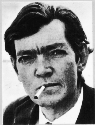

Julio Cortázar (1914-1984)
Escritor argentino. Nació en Bruselas y falleció en París. En Argentina trabajó como maestro; hasta 1951 vivió en Buenos Aires con su familia. Gracias a una beca del gobierno francés se instaló en París para cursar estudios; llevó a cabo traducciones de Poe y Yourcenar para poder sobrevivir. Cuando comenzó a escribir poesía, lo hizo bajo el seudónimo de Julio Denis y escribió Presencias, 1938.
Fidel Castro le invitó a viajar a Cuba después del triunfo de la revolución. Cortázar siempre fue un fiel defensor de la revolución a través de numerosos artículos y conferencias. Conoció de cerca el triunfo sandinista en Nicaragua y escribió Nicaragua tan violentamente dulce, 1984.
Durante los primeros años escribió cuentos a la manera de Borges, eje de la vida literaria de Buenos Aires y abrió las puertas a la ficción fantástica dejando de lado el realismo romántico. Aparecieron los relatos cortos titulados Bestiario en 1951, donde también dejará sentir la influencia de su maestro Poe, destacando los modismos que utilizan sus personajes y donde el habla de la clase media fluye. Por otra parte, lo fantástico irrumpe con fuerza en lo cotidiano como enHistorias de Cronopios y de Famas, 1962; Las armas secretas, 1964; y Octaedro, 1974. La definitiva consagración del autor fue con su novela Rayuela, de 1963.